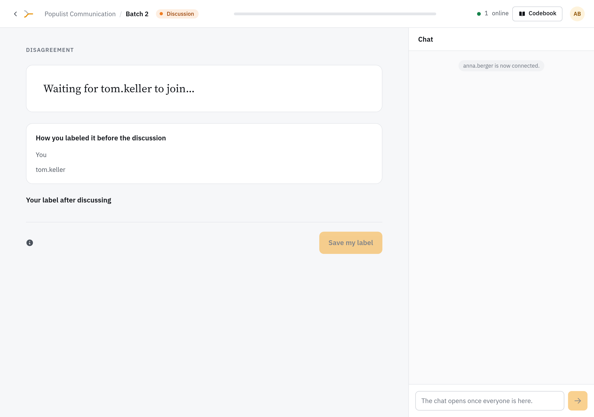
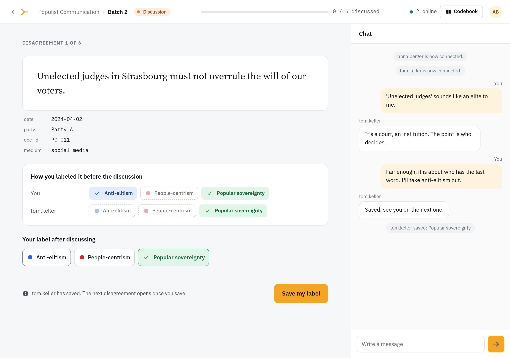
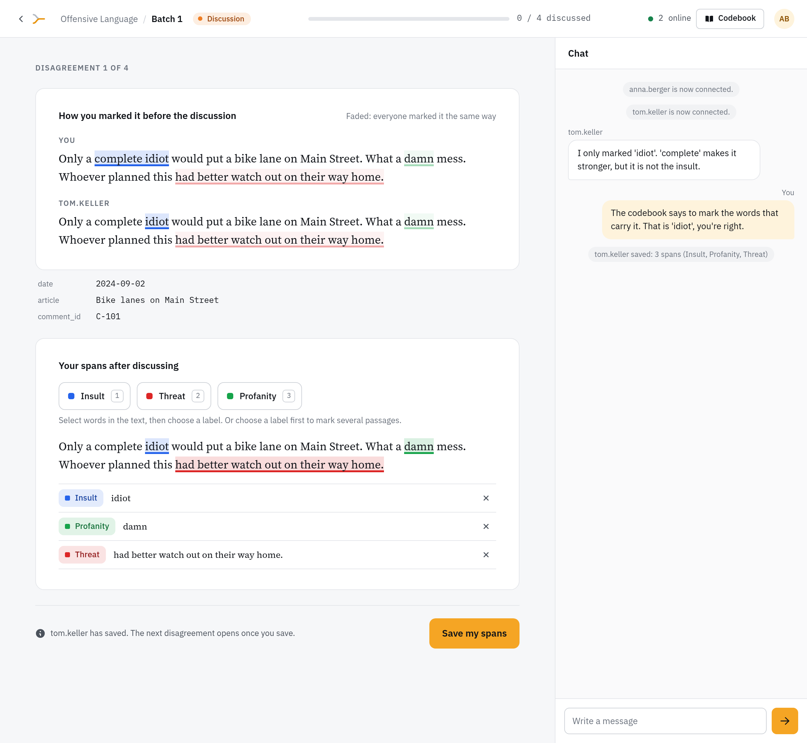

Discuss
When every annotator has finalized and you labeled some texts differently, the batch moves to the discussion. You go through these texts together in a chat, one at a time, and afterwards each of you saves your label again. The discussion is there to find out whether you read the text or the codebook differently, and to settle what can be settled between you; see How Arbiter works.
Join the discussion
The home page shows the batch under Waiting for you with Join discussion; so does the project page.
The discussion needs everyone: it starts only once all annotators of the batch have the discussion page open. Until then the page waits and names who is missing, and the chat stays closed. Agree on a time with the others before you join.


Anna is there, Tom is not yet.
If someone leaves in the middle, the discussion keeps its place: when they come back, it goes on with the same text.
Discuss a text
The page shows one disagreement at a time, counted at the top as Disagreement 1 of 6 and so on:
the text, with its further information if the project shows it,
How you labeled it before the discussion: your labels and those of the other annotators,
Your label after discussing: your labels again, to change if the discussion convinces you,
the chat on the right.
Codebook in the top bar opens the codebook, so you can look up the rules you are talking about.


Tom has saved; Anna has taken out Anti-elitism and is about to save.
When you have talked it through, set your label and click Save my label. The line next to the button says who has saved already. Until everyone has, Undo save takes yours back. Once all of you have saved, the next disagreement opens; the chat notes what each of you saved.
You do not have to agree. Change your label only if the discussion convinced you. If you still see the text differently, save your own label: the text then goes to the expert, who decides it and can make the codebook clearer.
Discuss spans
In projects with spans in the text, a disagreement is a text in which you did not mark exactly the same passages with the same labels. Often you agree that a passage is there and differ only in where it starts or ends.
The page shows the text once for each annotator under How you marked it before the discussion, with the passages they marked. What everyone marked the same way is faded, so the differences stand out.
Below, under Your spans after discussing, you find your own passages again in the span editor. Change them as during annotation: mark a passage and choose its label, or remove one with × in the list. Then click Save my spans. Everything else works as for labels: the line next to the button says who has saved, and the next disagreement opens once everyone has.


Anna marked “complete idiot” as the insult, Tom only “idiot”. After the chat, Anna shortens hers; Tom has saved.
After the discussion
After the last disagreement, the batch moves on by itself. If you now agree on every text, it is finished. If not, the texts you still disagree on go to the expert decision.
The chat is kept with each text: the expert reads it before deciding, and it is part of the project’s exports.